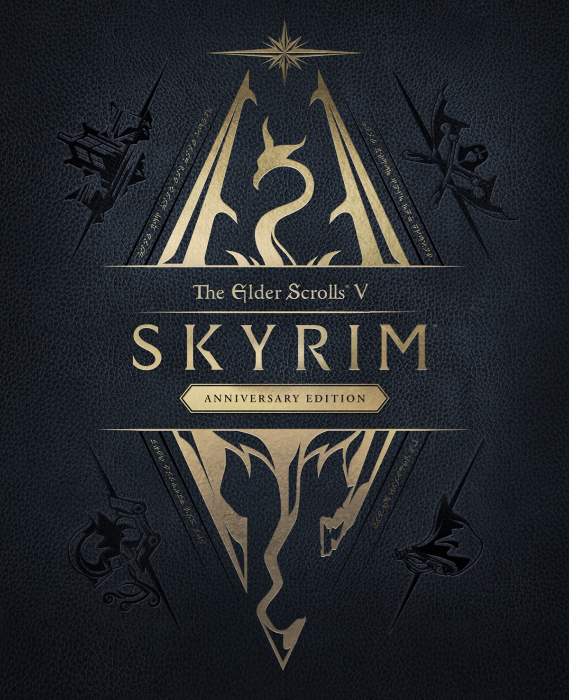
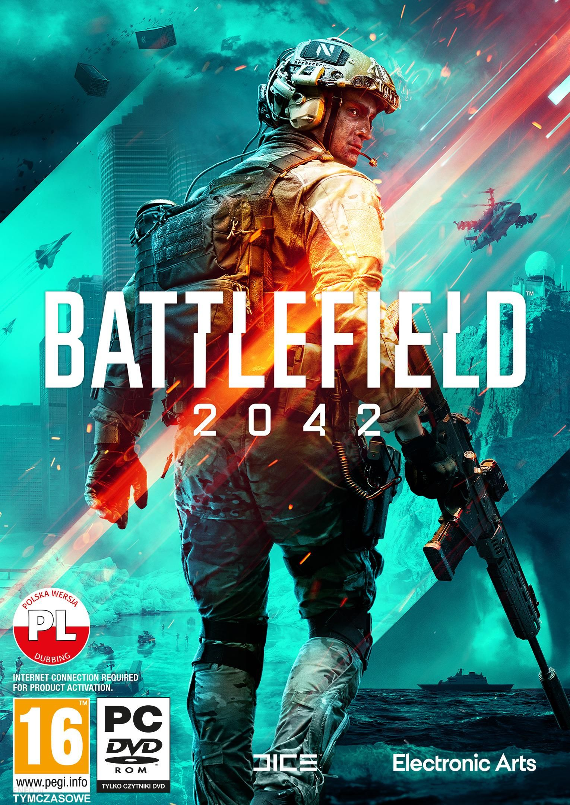
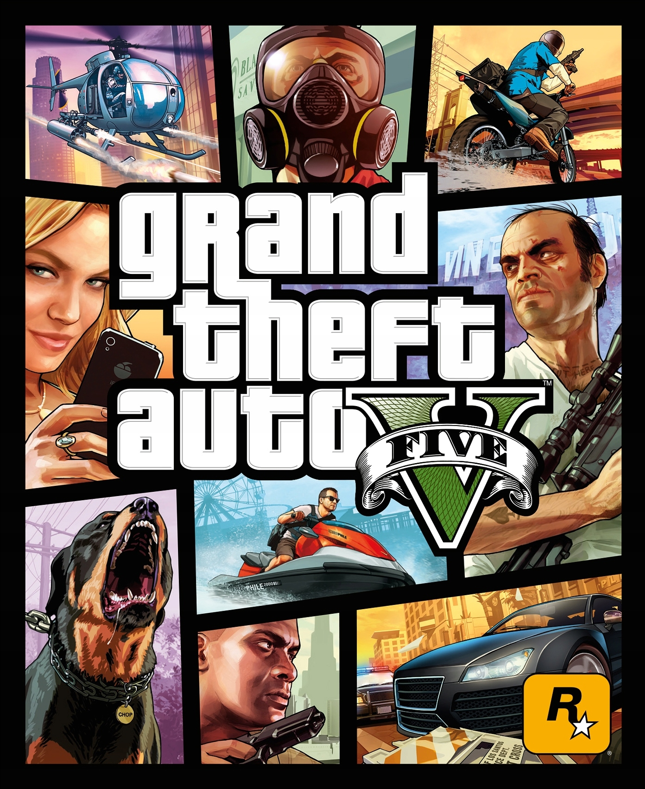
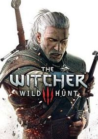
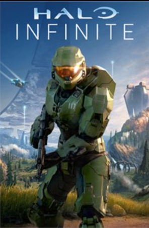
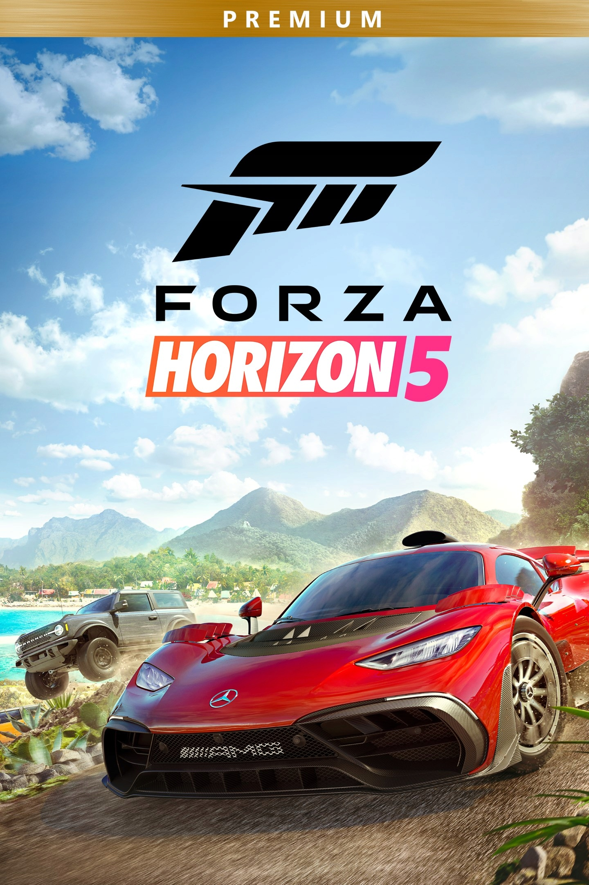
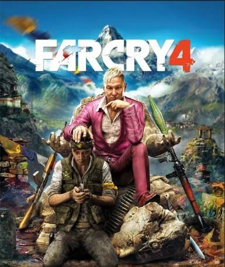

Strona domowa gier komputerowych
 Rynek gier komputerowych w Polsce jest bardzo popularny - zdecydowanie najwięcej osób w naszym kraju uruchamia gry właśnie na tej platformie. W dużej mierze wpływa na to możliwość grania za pomocą klawiatury oraz myszki, ponieważ nie każdemu
użytkownikowi odpowiada używanie kontrolerów dołączanych do konsol. Bez względu na preferencje, korzystanie z duetu klawiatura i mysz zdecydowanie lepiej sprawdza się w sieciowych strzelankach, w których liczy się dobry timing i ogromna
precyzja. W taki sposób przyjemniej gra się również w strategie czasu rzeczywistego, gdzie gracze mają dostęp chociażby do większej liczby klawiszy.
Rynek gier komputerowych w Polsce jest bardzo popularny - zdecydowanie najwięcej osób w naszym kraju uruchamia gry właśnie na tej platformie. W dużej mierze wpływa na to możliwość grania za pomocą klawiatury oraz myszki, ponieważ nie każdemu
użytkownikowi odpowiada używanie kontrolerów dołączanych do konsol. Bez względu na preferencje, korzystanie z duetu klawiatura i mysz zdecydowanie lepiej sprawdza się w sieciowych strzelankach, w których liczy się dobry timing i ogromna
precyzja. W taki sposób przyjemniej gra się również w strategie czasu rzeczywistego, gdzie gracze mają dostęp chociażby do większej liczby klawiszy.
Gry komputerowe możemy podzielić na wiele gatunków, które różnią się przede wszystkim
stylem rozgrywki. Z najpopularniejszych można wyróżnić gry akcji, strzelanki, przygodówki, bijatyki oraz RPG-i. Oczywiście to tylko podglądowe przykłady, ponieważ poszczególne rodzaje gier możemy dodatkowo podzielić na podkategorie.
W niektórych shooterach akcję obserwujemy z oczu głównego bohatera (FPP), zaś w innych kamera ustawiona jest za jego plecami (TPP).
To samo dotyczy strategii – w RTS-ach przejmujemy bezpośrednią kontrolę
nad jednostkami, bez możliwości wstrzymania gry w celu przemyślenia kolejnych kroków. Natomiast w strategiach turowych na spokojnie możemy rozplanować każdy ruch swojej armii.
|  |  |
W ostatnich latach cyfrowa dystrybucja zyskuje na coraz większej popularności, zwłaszcza na komputerach osobistych. Wynika to z tego, że każda produkcja dostępna na pecetach, jaka została wydana w wersji pudełkowej, posiada unikatowy klucz seryjny, który realizuje się w jednej z dostępnych platform, np. Steam. W ten sposób wydawcy całkowicie zablokowali możliwości wymiany oraz sprzedaży używanych gier, bo każdy użytkownik musi przypisać dany tytuł do swojego konta. W związku z tym, wydania pudełkowe mają jedynie wartość kolekcjonerską. W wielu przypadkach nie trzeba nawet wkładać płyty do napędu komputera, gdyż po wpisaniu klucza wszystkie potrzebne pliki pobiorą się automatycznie z internetu. Dzięki temu cyfrowa dystrybucja na pecetach jest tak bardzo popularna – nie tylko wiele gier można kupić taniej za sprawą różnych promocji, ale na dodatek nie trzeba czekać na dostawę, tylko po otrzymaniu kodu od razu można rozpocząć proces ściągania plików instalacyjnych.
Oferta gier komputerowych do ściągnięcia jest także atrakcyjna z innych powodów. W ten sposób możecie zdobyć wiele wartościowych, starszych produkcji, których nie można już kupić w sklepach w wydaniach pudełkowych. W takich sytuacjach cyfrowa edycja jest jedynym ratunkiem. Ponadto duża część gier niezależnych, tworzonych przez niewielkie studia z całego świata, nigdy nie trafia do dużej dystrybucji, przez co takie produkcje dostępne są wyłącznie w wersji digital.
|
|
 |  |

|
|

|

|

|
|

|

|
© Alicja Żmuda 2F1